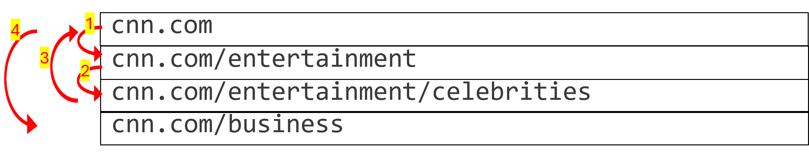
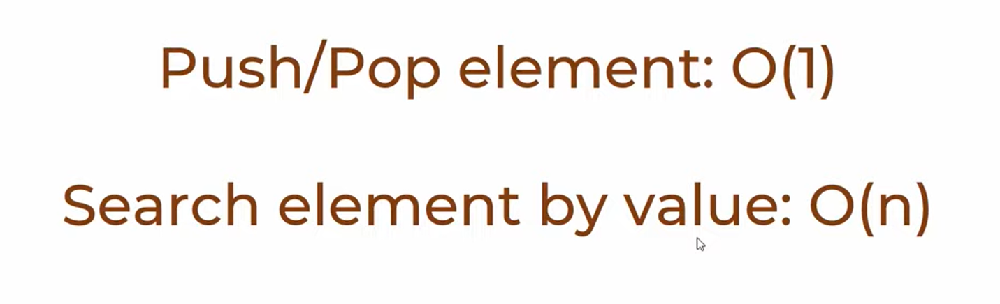
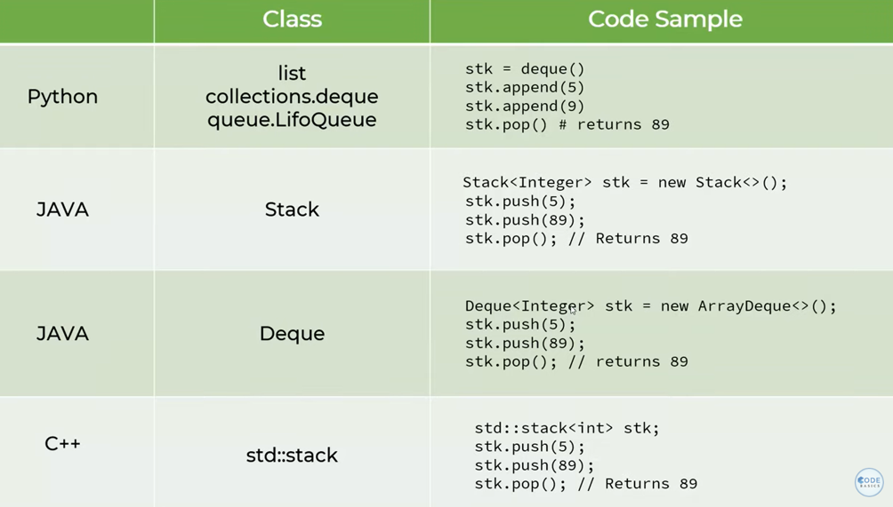

Build stack with deque. And, learn why list or array is not ideal for a Stack.
DSA
Author
Mohit Gupta
Published
May 21, 2025
Modified
May 21, 2025
In this notebook, we will understand what stack is, where we interact with stack it our daily lives and how can we build a stack in Python.
Before understanding what stack is, let’s see 2 most common examples of our daily life interaction with a stack which is now an integral part of modern day lives with computers, tablets and smartphones.
Internet browsing - Suppose we are browsing the pages of a news channel CNN. Initially we are at their homepage - cnn.com, then we went to read news in the Entertainment section - cnn.com/entertainment, on this page we want to read about celebrities - cnn.comentertainment/celebrities and now we want to go back to the homepage (cnn.com) and read the news in the business world - cnn.com/business. Stack is the underlying data structure which stores our browsing history and provides a convenient way for us to go back or forward from our existing page to a page that has been visited in the past.

Undo/Redo operations - If we are writing text in word document, we can conveiently press Ctrl + Z to undo or Ctrl+Y to redo becuase we are storing the user operations in a stack so that user experience is enhanced where it becomes extremly simple to either undo a change or redo it.
We can build stack in python by 2 ways: 1. List - okay but not ideal 2. Deque - better
1. Stack using List
browsing_history_stack = [] # initialize an empty list to store browsing historybrowsing_history_stack.append('cnn.com')browsing_history_stack.append('cnn.com/entertainment')browsing_history_stack.append('cnn.com/entertainment/celebrities')print('browsing history: ', browsing_history_stack)# If we want to revisit the last browsing page: use popprint('Last page visited was: ', browsing_history_stack.pop())# pop removes the last page and updates the browsing_history_stackprint('new browsing history: ', browsing_history_stack)
browsing history: ['cnn.com', 'cnn.com/entertainment', 'cnn.com/entertainment/celebrities']
Last page visited was: cnn.com/entertainment/celebrities
new browsing history: ['cnn.com', 'cnn.com/entertainment']
Q. Why a List is not ideal for storing the browser history i.e. a Stack?
Answer History is dynamic - There is no fixed size of history. In a session, a person can browse 5 websites or 50000. There is no limit. Hence, static arrays or list cannot be used thus, dynamic array is the only option. But with dynamic array there is memory overload problem.
“The issue with using a list as a stack is that list uses dymanic array internally and when it reaches its capacity it will reallocate a big chunk of memory somewhere else in memory area and copy all the elements. For example in below diagram if a list has a capacity of 10 and we try to insert 11th element, it will not allocate new memory in a different memory region, copy all 10 elements and then insert the 11th element. So overhead here is (1) allocate new memory plus (2) copy all existing elements in new memory area.”
from collections import deque # import dequestack = deque() # initialize a stackdir(stack) # read what different methods are present with a deque class object
Notice, deque has many similar attributes to that of list like append, insert, pop, remove, index. It means using deque stack is going to be exactly same as if we are handling a list object.
stack = deque() # add browsing historystack.append('cnn.com')stack.append('cnn.com/entertainment')stack.append('cnn.com/entertainment/celebrities')# Use of deque is same as a listprint('browsing history: ', stack)print('Last page visited was: ', stack.pop())print('new browsing history: ', stack)
browsing history: deque(['cnn.com', 'cnn.com/entertainment', 'cnn.com/entertainment/celebrities'])
Last page visited was: cnn.com/entertainment/celebrities
new browsing history: deque(['cnn.com', 'cnn.com/entertainment'])
---------------------------------------------------------------------------TypeError Traceback (most recent call last)
Cell In[35], line 2 1print(stack[1]) # indexing----> 2print(stack[:2])
TypeError: sequence index must be integer, not 'slice'
Wow!😮
So, with deque stacks, we can :
perform indexing ✅
but slicing ❌
Q. How to perform slicing?
Ans. Possible solutions:
convert stack to list. For eg: list(stack)[:2]
get one element at a time in the index range, aggregate and return the aggregated results
Writing a Stack class
While writing a Stack class, we first need to think what functionalities/methods we want our Stack class to support.
We want to add elements i.e. push
We want to get last element i.e. pop
We want to get the size of the stack (e.g. browsing history)
We want to see if the stack is_empty
We want to see the last element in the stack i.e. peek
get last_k_items
print the current stack i.e. printStack
class Stack:def__init__(self):self.container = deque()def push(self, item):self.container.append(item)def pop(self):returnself.container.pop()def size(self):returnlen(self.container)def is_empty(self):returnself.size()==0def peek(self):returnself.container[-1]def last_k_items(self, k=5):returnlist(self.container)[-k:]def printStack(self):"""print the stack from bottom to top """# make a copy because pop operation would remove elements in place temp =self.container.copy() stack_str ="\n"# initialize a string to print stack stack_str+="**--"# edge case: if stack is emptyiflen(temp)==0: stack_str+='\n⚠ Stack is empty'whilelen(temp)!=0: stack_str+=f"\n{str(temp.pop())}" stack_str+="\n--**"return stack_str
browsing_stack = Stack() # add browsing historybrowsing_stack.push('cnn.com')browsing_stack.push('cnn.com/entertainment')browsing_stack.push('cnn.com/entertainment/celebrities')# Test methodsprint('1. browsing history: ', browsing_stack.printStack())print('2. Last page visited was: ', browsing_stack.pop())print('3. new browsing history: ', browsing_stack.printStack())print('4. Length of history: ', browsing_stack.size())print('5. Is browsing history empty? : ', browsing_stack.is_empty())
1. browsing history:
**--
cnn.com/entertainment/celebrities
cnn.com/entertainment
cnn.com
--**
2. Last page visited was: cnn.com/entertainment/celebrities
3. new browsing history:
**--
cnn.com/entertainment
cnn.com
--**
4. Length of history: 2
5. Is browsing history empty? : False
From above we can convince easily that the time complexity of Stack is as follows:

In different languages, Stack can be implemented as follows:

Exercise-1: Write a function in python that can reverse a string using stack data structure (use the Stack class implemented above.)
reverse_string("We will conquere COVID-19") should return "91-DIVOC ereuqnoc lliw eW"
Hint: Treat each character as a browing history item. So our goal is to print browsing history in reverse order
Show solution code
def reverse_string(string):# initialize a stack mystack = Stack() # push one character at a timefor char in string: mystack.push(char) reversed_str =""for i inrange(mystack.size()): reversed_str+=mystack.pop()return reversed_strreverse_string('We will conquere COVID-19')
'91-DIVOC ereuqnoc lliw eW'
Exercise-2: Write a function in python that checks if paranthesis in the string are balanced or not. Possible parantheses are “{}’,”()” or “[]”.
# This solution is probably the first solution one would think without using a Stackdef is_balanced(string): normal_bracket_start ='(' curly_bracket_start ='{' square_bracket_start ='[' normal_bracket_start_count =0 curly_bracket_start_count =0 square_bracket_start_count =0 normal_bracket_end =')' curly_bracket_end ='}' square_bracket_end =']' normal_bracket_end_count =0 curly_bracket_end_count =0 square_bracket_end_count =0# if any of the 3 paranthesis is presnt - it has to start with '(', '{' or '['. If at any instant the count of # any _end bracket > _start of that particular bracket, it means unbalanced.# Also at end, if count of _start != _end for any bracket type => unbalanced# let's iterate through the charactersfor char in string:# update the countsif char == normal_bracket_start: normal_bracket_start_count+=1elif char == normal_bracket_end: normal_bracket_end_count+=1elif char == curly_bracket_start: curly_bracket_start_count+=1elif char == curly_bracket_end: curly_bracket_end_count+=1elif char == square_bracket_start: square_bracket_start_count+=1elif char == square_bracket_end: square_bracket_end_count+=1# if at any instant count of _end bracket > _start of that particular bracketif normal_bracket_end_count>normal_bracket_start_count or curly_bracket_end_count>curly_bracket_start_count or square_bracket_end_count>square_bracket_start_count:returnFalse# at endif normal_bracket_end_count!=normal_bracket_start_count or curly_bracket_end_count!=curly_bracket_start_count or square_bracket_end_count!=square_bracket_start_count:returnFalsereturnTrue# Testprint(is_balanced("({a+b})"))print(is_balanced("))((a+b}{"))print(is_balanced("((a+b))")) print(is_balanced("))")) print(is_balanced("[a+b]*(x+2y)*{gg+kk}"))
True
False
True
False
True
Show solution code (using Stack)
# For balanced brackets, the closing brackets would appear in a reverse order. FOr ex:# if at start we have first normal and then curly like ( { then for closing we will first have a curly and then normal like }) ---(A)# We can use stack, where we would store just the opening brackets and the whenever a closing bracket occurs, we pop the last element in the stack. # Because the last element of the stack has to be the counterpart of the closing bracket just encountered (as explained in ---(A))def is_match(ch1, ch2):""" check whether the counterpart of ch1 and ch2 are same or not """# storing the counterparts for the closing brackets match_dict = {')': '(','}': '{',']': '[' }return match_dict[ch1]==ch2def is_balanced(string): stack = Stack()for char in string:# only add opening brackets to the stackif char=='('or char=='{'or char=='[': stack.push(char)# if char is closing bracketif char==')'or char=='}'or char==']':# if there is no opening bracket in the stack and closing bracket startsif stack.size()==0:returnFalseelse:# pop the last element in the stack by checking if it is indeed the counter part else return Falseifnot is_match(char, stack.pop()): # stack.pop() gives the last elementreturnFalseif stack.size()==0:returnTruereturnFalse# Testprint(is_balanced("({a+b})"))print(is_balanced("))((a+b}{"))print(is_balanced("((a+b))")) print(is_balanced("))")) print(is_balanced("[a+b]*(x+2y)*{gg+kk}"))
True
False
True
False
True
####################### code refactoring tip####################### Instead of writing 3 lines:if stack.size()==0:returnTruereturnFalse# simply write this 1 line:return stack.size()==0